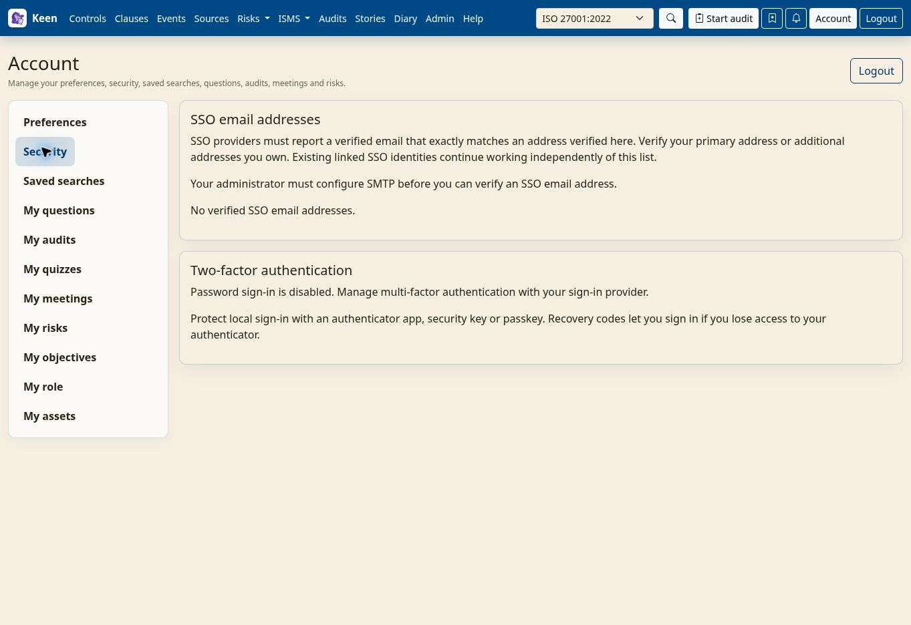

Using Keen
Account security and preferences
Chapter 17 of 17
Protect your local account
If you sign in with a local Keen account, you can add a second factor and keep recovery codes. This chapter shows how to set that up, what sign-in looks like afterwards, and what to do when an authenticator is lost. Single sign-on accounts follow the identity provider's policy instead.


Open Account → Security → Manage account security and confirm your password. If two-factor authentication is already enabled, verify with an existing authenticator or a recovery code. That opens a five-minute management window.
- Authenticator app. Scan the QR code or enter the setup key into your app, then enter its six-digit code to complete enrolment.
- Security key or passkey. Give it a recognisable name, choose Add security key / passkey and follow your browser's prompt. You can register up to ten.
- Recovery codes. Save the ten codes shown after your first authenticator is registered. Each replaces the second factor for one sign-in. Keen stores only their hashes and cannot show them again.
What sign-in looks like afterwards
Sign in with your username and password as before. Keen then prompts for a registered security key or passkey, or shows the authenticator-code field when that is your method, and remembers your last successful method in this browser. If verification fails or is cancelled, choose another method or a recovery code; “Can't use this method?” offers the alternatives. After five incorrect authenticator or recovery codes within an hour, counted across sign-ins, Keen ends the verification, accepts no code for your account for an hour and e-mails you; a security key still signs you in during that hour.
Replace a lost authenticator
Sign in with a recovery code, open Security and verify again with another unused code. Register a replacement, remove the lost authenticator and replace your recovery codes; replacing them invalidates every previous unused code. Factor changes sign out your other local sessions, and Continue to Keen finishes the current one.
If everything is lost. An administrator can require two-factor authentication for administrators or for every local account; required accounts enrol before entering Keen and keep at least one authenticator. If all authenticators and recovery codes are gone, contact the operator of your Keen installation for an account-security reset.
Account security emails
When your installation has mail configured and your account has an e-mail address, Keen tells you about security-relevant changes to your account.
You receive an alert for a successful sign-in from an IP address Keen has not recorded for your account, for password changes and administrator password resets, and for authenticator additions or removals, recovery-code replacement, each use of a recovery code, a verification ended after repeated incorrect codes, and operator MFA resets. Each e-mail shows the account, the installation, the UTC time and the IP address.
If you do not recognise the activity, open your known Keen address directly and contact your administrator.
Going deeper: when alerts are sent
A sign-in alert is generated after authentication completes, including the second factor when required, so a different mobile, VPN or ISP address can trigger one. Emails are delivered in the background; keep your account e-mail address correct. Your administrator configures the mail service and the trusted proxy addresses needed to identify browser IPs.
Notifications
The bell in the navigation bar gathers what concerns you that someone else did. Choose Notifications under it to open your inbox.
Keen tells you when an audit you attend starts, including a scheduled one; when you are asked to take a quiz, once its round opens; when minutes are added for a meeting you attended; and when the latest result of an effectiveness measure you own falls outside its threshold. A measure that stays outside is not reported again until it has recovered. You are not told about your own changes, and you hear about each record once: later edits to a meeting's minutes do not tell you again. Someone added to a meeting's attendees after its minutes were written is told then.
Under Preferences, Notifications chooses how you hear: in Keen, by email, or both. Email needs mail set up by your administrator and an email address on your account; until then notifications stay in Keen. With email only, notifications are listed as read in Keen and the bell does not count them.
Choose a notification to open its record, which marks it as read. Mark all as read clears the rest without opening them, and Unread only hides those you have read.
Going deeper: what the inbox shows
A notification shows only while you can open its record. It leaves the inbox when the record is deleted, its feature is switched off or you lose access, and a quiz notification leaves once its round closes. Attendees named through a People record are told as well as those added by account; an audit then opens for them only with access to audits. Anyone recorded on a meeting, as an attendee or with apologies, can read it from My meetings without ISMS access: its minutes, attendance and links, with linked ISMS documents named but not opened. Read notifications are removed after 90 days, and unread ones after a year.